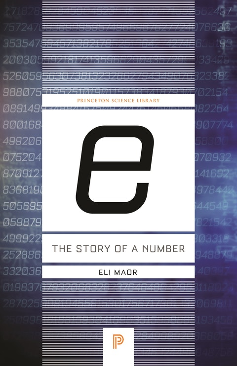
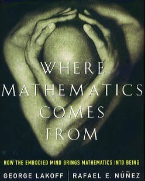

e: The Story of a Number (and more)
Sunday August 16, 2020
Eli Maor gives a great history of e, full of personalities and math concepts that I found very enjoyable. I was reminded of the difference between historical development and modern understanding, which led me to revisit Where Mathematics Comes From, which has in its part VI perhaps a better presentation of the latter way of knowing about e.
The historical perspective reminds me that math didn't start as formal as it is now. Like Bourbaki leading to New Math, modern formalism may not be the best way to teach concepts. Being able to prove something and understanding it are not the same thing. I'm not sure I agree completely with the idea of what math is in WMCF, but I do agree that humans do better when they understand things as something more than just a game of symbol manipulation. In a similar spirit to the tau movement, I think mathematical notation, proof, and especially education should focus on communicating meaning.
More broadly, I think there ought to be Feynman explanations for more topics.
Is e so "natural?"
I think e is not always the best choice of base, despite being the "natural" log base. The advantages of e are largely to do with calculus, and may not help in a particular application.
In the math for radioactive decay, often e is used even though things are mostly otherwise in terms of half-life. This introduces complexity that just isn't necessary. It would be more convenient to use 1/2 as the base. (I wonder whether e is used just because that's the button people have on their calculators.)
In finance, interest is usually based on some finite period, like 1/12 of a year in the case of my savings account and mortgage. I did find, with help, one bank that compounds continuously for some products. But usually \( e^x \) will be an approximation, not what is really going on, for finance.
When scaling data with a log, changing the base is the same as multiplying the scaled data by some constant. Especially if you're already going to normalize that data (with a z-score, for example) or use scale invariant techniques on the transformed data, it doesn't matter what log base you use.
For softmax, we do care about the derivative, but not really about whether it's exactly equal to the function's value. When training a neural net, the constant factor is "neutralized" by the constant factor we introduce in the learning rate. At inference, using a different base is the same thing as changing the softmax temperature, which people already do for various reasons.
The number \( e \) is very cool, no doubt, but that doesn't mean it has to be used for every application.
A quick trip to \( e^{\pi i} -1 = 0\)
What function is always equal to its own derivative?
\[ f(x) = f'(x) \tag{1} \]
The constant function \( f(x) = 0 \) has that property, but is dull, so leave it out.
The function can't ever touch the x-axis: the closer it gets, the slower it approaches.
The function can't be moved up or down, because that would break equality with its derivative. It can be moved left or right, and it can be flipped over the x-axis, so to pick a unique function, set the y-intercept to be 1.
\[ f(0) = 1 \tag{2} \]
Equations (1) and (2) are enough to write out the function as a polynomial.
Equation (2) says the constant term is 1. Equation (1) says the polynomial must include a term whose derivative is 1, so the linear term is \( \int{1} = x \). By the same reasoning, the next term is \( \int{x} = \frac{1}{2} x^2 \), and the next is \( \frac{1}{3} \cdot \frac{1}{2} x^3 \), and so on. This gives equation (3).
\[ f(x) = 1 + x + \frac{x^2}{2} + \frac{x^3}{3!} + \dots = \sum_{n=0}^{\infty} \frac{x^n}{n!} \tag{3} \]
The functions with derivatives proportional to their values are the exponential functions, \( f(x) = b^x \). Equation (2) is aligned with \( b^0 = 1 \). Using \( b^1 = b \) identifies the base for equation (3).
\[ f(1) = \frac{1}{0!} + \frac{1}{1!} + \frac{1}{2!} + \frac{1}{3!} + \dots = 2.718281828 \tag{4} \]
This is \( e \), and it's \( e \) not by numerical equality but because this is the essence of \( e \): the base of the exponential whose derivative equals its value.
\[ e^x = \sum_{n=0}^{\infty} \frac{x^n}{n!} \tag{5} \]
This relates exponentiation using arbitrary powers with using only integer powers. It already supports complex exponents if you don't mind doing some calculating.
import math
def approx_exp(x, terms=20):
return sum(x**n / math.factorial(n) for n in range(terms))
approx_exp(math.pi * 1j)
## (-1.0000000035290801-5.289182672965142e-10j)\[ e^{\pi i} + 1 = 0 \tag{6} \]
To understand why that should be, consider that exponentiation connects addition and multiplication, as \( b^{m + n} = b^m \cdot b^n \). Imaginary numbers add as usual, but their multiplication amounts to rotation. The base \( e \) has the property that rotation is given in radians, so \( \pi i \) means one half turn, taking the result to -1.
This can also be seen by discovering that \( e^{xi} = \cos{x} + i \sin{x} \), for example by checking that their values at 0 and all their derivatives are equal.
Negative bases have the funny property that their even exponents give positive results, but odd exponents give negative results. What should the result be for an exponent like 1.2, then? Thinking of rotation, it makes sense that results sweep through complex values to get from the positive real axis to the negative real axis and so on. This is a fine way to draw a logarithmic spiral. It can be connected to equation (6).
\[ (-b)^x = b^x (-1)^x = b^x (e^{\pi i})^x = b^x e^{x \pi i} \tag{7} \]
The rotation comes from the negative base already being rotated to begin with. In fact it's only the boring positive real numbers that don't rotate when exponentiated.
Forgive me for using \( \pi \) despite mentioning \( \tau \) above; \( \pi \) is so familiar in this context that I didn't want to introduce a separate new thing, even though \( \tau \) is arguably better especially in this setting.
A few quotes from e: The Story of a Number
"Though [William] Oughtred held no official university position, his contributions to mathematics were substantial. In his most influential work, the Clavis mathematicae (1631), a book on arithmetic and algebra, he introduced many new mathematical symbols, some of which are still in use today. (Among them is the symbol × for multiplication, to which Leibniz later objected because of its similarity to the letter x; two other symbols that can still be seen occasionally are :: to denote a proportion and ~ for "the difference between.")" (page 15)
"The Pythagoreans believed that numbers are the prime cause behind everything in the world, from the laws of musical harmony to the motion of the planets. "Number rules the universe" was their motto, and by "number" they meant natural numbers and their ratios; everything else—negative numbers, irrational numbers, and even zero—was excluded." (page 51)
"[William Rowan] Hamilton's rigorous approach marked the beginning of axiomatic algebra: ..." (page 167)
Thanks to Will Karnasiewicz for pointing me to a continuously compounding bank, and Mervin Chen for pointing me to Khan's gratuitous calculus.

